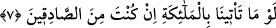
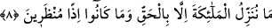

delirmesi gibi.
Sâib şöyle der:
Gayb âleminin penceresi cünûn ehlinin gönlüdür
Ben o şehirdenim ki dîvâneleri çok olur
7. “Eğer doğru söyleyenlerden idiysen, bize melekleri getirmeliydin.”
“Eğer doğru söyleyenlerden idiysen,” şâyed iddiânda doğru olanlardan idiysen
“bize” gerçek bir peygamber olduğuna şâhidlik edecek; uyarma görevinde sana destek
verecek “melekleri getirmeliydin.” Bu ifâde tıpkı “O’na bir melek indirilip kendisiyle
birlikte o da uyarıcı olsaydı ya!” (el-Furkan, 25/7) âyetine benzemektedir.
Yâni, eğer peygamber olduğun konusunda doğru söylüyorsan bize melekleri getir ki
bizim huzûrumuzda senin peygamberliğine şâhidlik etsinler. Ya da peygamberlerini
yalanlayan öteki ümmetlere geldiği gibi seni yalanladığımız için bizi de cezalandıracak
melekler getirmeliydin! Sen doğrulardansan yap bunu. Çünkü Allah’ın böyle bir şeye
kâdir olduğu, kezâ vazifeni yürütürken O’na muhtaç olduğun şüpheden uzak
şeylerdendir.
Allah Teâlâ, onlara cevab olarak şöyle buyuruyor:
8. Biz melekleri ancak hak ile indiririz. O zaman onlara mühlet verilmez.
“Biz melekleri ancak hak ile” yâni, ilâhî sünnet ve hikmetin gerektirdiği durumlarda
“indiririz.” Oysa onlar, sırf melekler kendileri nezdinde şâhidlikte bulunsunlar diye
meleklerin indirilmesini teklif etmektedirler. Hem bunu bu kadar hakir ve önemsiz bir
mertebede olmalarına hem de melek indirilmesinin kesinlikle doğru ve hikmetli
olmayacağı bir mertebede bulunmalarına rağmen istiyorlar! Çünkü meleklerin doğru ve
hikmetli bir şekilde indirilmesi, vahiy indirmek bâbındandır. Bu ise kâmil
mü’minlerden olan yüce peygamberlerden başka hiç kimseye nasib olmayan bir şeydir.
Şu halde bu, böyle değersiz ve önemsiz kâfirlere nasıl nasib olabilir? Meleklerin ilâhî
hikmet çerçevesinde kâfirlerle alâkalı olarak indirilişleri, tıpkı önceki ümmetlerden
kendileri gibi olanlara yapıldığı gibi sâdece onların kökünü kurutup azâb etmek için
olabilir. İşte melekler onlara indirilecek olsa, tamâmen kökleri kazınıverir.
“o zaman onlara mühlet verilmez.” istekleri yerine getirilip de melekler indirildiği
zaman kendilerine mühlet verilmez. Yâni, Biz melekleri indirsek tıpkı yalanlayan ve